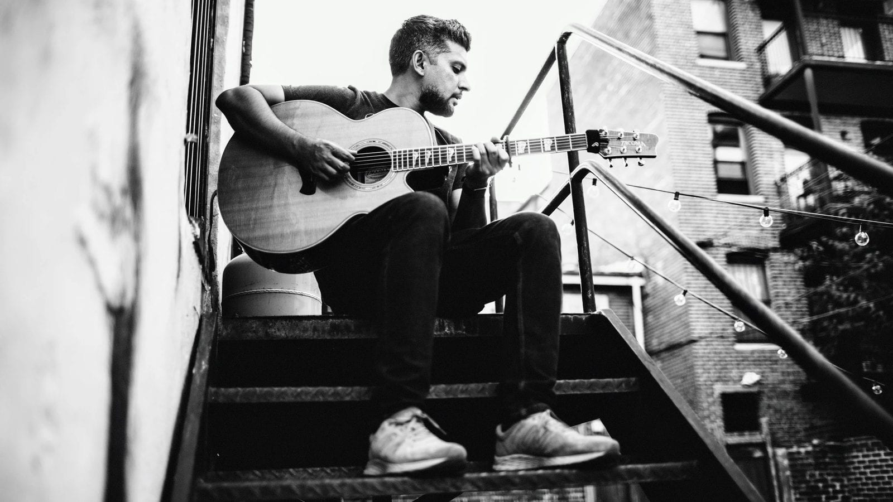
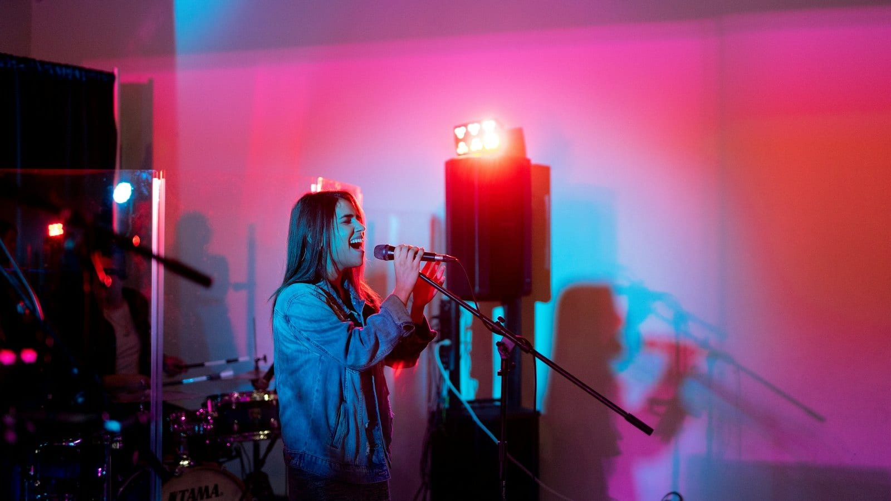
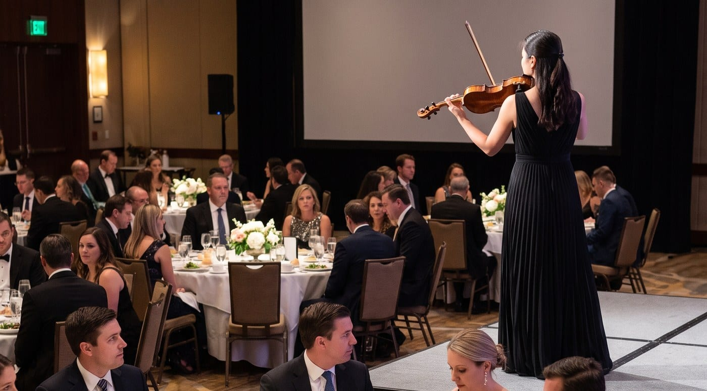

Duo or trio
BOOK LIVE MUSIC IN COLORADO
Live music at a Downtown Denver hotel
If you’re planning an event at Hyatt Centric Downtown Denver, you’ve probably seen the rooftop already. It’s an awesome indoor-outdoor bar on the top floor, looking out over the buildings downtown, and live music sounds great up there.
Tejas Singh played the rooftop bar and patio as a duo for a corporate conference reception hosted by Softdocs.


Photos: Hyatt Centric Downtown Denver.
Our picks
It’s great for receptions, cocktail hours and sunset events.
Our picks
It’s a lovely fit for arrivals, welcome receptions and evenings at the bar.
Our picks
It’s the space for dinners, galas, holiday parties and wedding receptions.
90s and 2000s R&B and hip-hop
LUXlife Wedding Band of the Year, Colorado
Soul and R&B
Funk and soul
Yacht rock

Party covers from the 80s and 90s onward

String quartet
All kinds of music (open format)
Send us your date, and we can put together live music for your event at the hotel, from a solo musician in the lobby to a full band in the Colorado Ballroom.
Want some more ideas? Take a look at live music for corporate events, weddings, a wedding cocktail hour and private parties, or at more Denver hotels and conference centers.